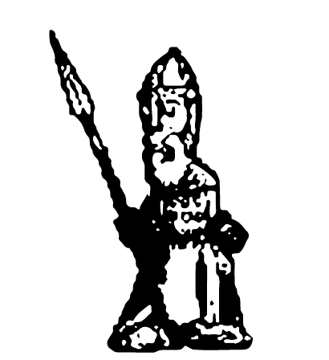
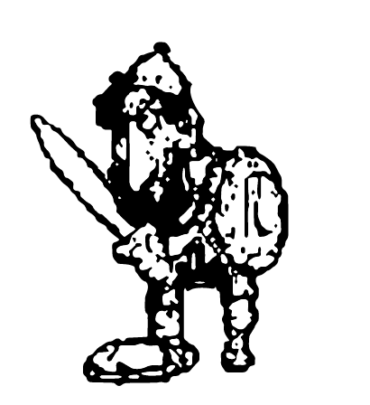
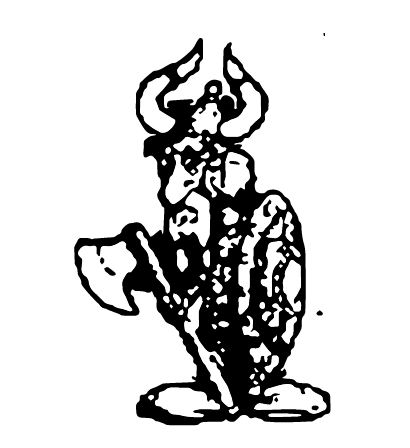

Sistema de quest
Cumple con las misiones para obtener grandes recompensas, no solo de experiencia sino que podrás conseguir tesoros invaluables.
Balance mejorado
Ninguna raza o función tiene características que permitan sacar ventaja en el juego. Tu habilidad será la única que determine tu destino y el de tu clan.
Comercialización de personajes
Te garantizamos un entorno seguro para que puedas comercializar tus personajes, sin riesgos y con la seguridad que solo ARGENTUM puede ofrecerte.
SISTEMA PERGAMINOS
Si estás muerto podés utilizar un pergamino para moverte rápidamente a Ullathorpe o Nix.
SISTEMA DE COFRES
Al abrir un cofre podés obtener objetos extraordinarios o no. Los cofres serán algo muy importante.
CONTADOR DE AGILIDAD O FUERZA
Al alcanzar el máximo de dopa en agilidad o fuerza se muestra un indicador en la pantalla. Cuando quedan 5 segundos para que el efecto de la dopa se disuelva escucharás un sonido de una vaca y visualizarás el tiempo restante en un indicador. El sonido es configurable desde Opciones.